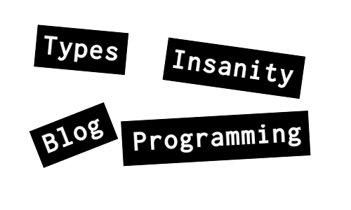

This blog has been created with Hakyll. Syntax highlighting is generated with pygments which has been patched for Idris support.
The code for this blog is hosted on hub.darcs.net.
darcs get http://hub.darcs.net/raichoo/raichoo.github.io
About this Blog
All things typed, all things functional. This blog is mainly about my journey into the depths of functional programming and type systems.
About raichoo
Started programming BASIC at the age of 12 on a CPC. I work at saltation in Bielefeld, Germany where I hack in pretty much every progamming language I can get my hands on. Here are some of them:- ▸ Scala
- ▸ Haskell
- ▸ JavaScript
- ▸ Java
- ▸ C
- ▸ C++
- ▸ Objective-C
- ▸ C#
- ▸ Python
Projects
- ▸ JavaScript backend for Idris
- ▸ iQuery low-level JavaScript bindings for Idris
- ▸ Pygments Highlighter for Idris
- ▸ idris-vim: a vim mode for Idris
- ▸ haskell-vim: custom haskell vim scripts
- jabber: raichoo at jabber dot ccc dot de
- email: raichoo at googlemail dot com
Recent Posts
- ▸ January 28, 2014 Idris to JavaScript: New and improved!
- ▸ May 31, 2013 Calling Idris from Javascript and vice-versa
- ▸ February 13, 2013 Shrinking Idris JavaScript with Closure
- ▸ January 21, 2013 Idris to JavaScript: Playing with the FFI
- ▸ January 18, 2013 Towards dependently typed webprogramming with Idris
…or you can find more in the archives.